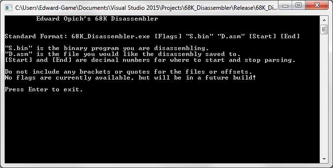

A program that converts raw binary data into readable Motorola 68000 assembly code. I'm getting into Sega Genesis homebrew development in my free time, and thus had a need to learn how to program for its processor, the M68k. So, I wrote this disassembler with the hopes of solidifying my knowledge of its assembly language in the process.
Its current functionality consists of blindly parsing a file's data into 68k instructions to be output to another file. One can input a decimal starting and ending address if they don't want to parse the whole file in one go. I intend on adding more features as I go.
The disassembler was developed in C++, with no external libraries, for the command line. It is made to be compatible with the Asm68k Assembler.
This was a solo project, done entirely in my free time, of my own will and desire.
